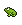

De: La Frikipedia, la enciclopedia extremadamente seria.
De: La Frikipedia, la enciclopedia extremadamente seria. De: La Frikipedia, la enciclopedia extremadamente seria.
| De la serie tribus urbanas del mundo: | |||
| Gungan | |||
| |||
| Hábitat | Una zanja llamada | ||
|---|---|---|---|
| Inteligencia | Su CI ha subido estos últimos años a -0,76. | ||
| Frase favorita | "Misa oye tusa, tusa tiene un orden pá misa?" | ||
| ¿Peligroso? | Para nada. Tú eres peligroso para ellos. | ||
| Obsesión | Hablar como n00bs y ser inútiles. | ||
| Notas | Parecen ranas. | ||
Los Gunganos se dividen en dos razas, los Ankura y los Otolla. Los Otolla son los típicos gungans de siempre, ojos saltones, cuerpo de humano pero más como de negro sin dinero, piel pegajosa y Síndrome de Down. Los Ankura iban a ser Otollas pero se quedaron atascados en la evolución y ahora son los más parecidos a las ranas.
En la primera (Y única) película que salieron, La Amenaza Gasper, Llevaron a unos jedis flipaos a Naboo y fuera de eso no hicieron nada más. Excepto entretener a unos robotitos de la Federación de Comercio mientras sus líderes se tomaban tequila y se drogaban pensando en que los droides podrían contra los semiranas. Y pudieron. Pero justo el joputa de Anakin los mató de un golpe y los droides murieron.
Podrían decirse que vivieron felices para siempre. Pero no, luego de la Orden 66 los imperiales fueron a por ellos y los masacraron completa, brutal y sanguinariamente. Un espectáculo que todos queríamos ver y George Lucas no quiso que veamos. ¡Maldito!
No vale la pena desperdiciar huellas dactilares en él. Vayan aquí: Jar Jar Binks 
Tarpals era el macho de los gungans. Era fuerte, valiente, leal, y tenía un buen par de... También era Capitán (obvio) y en la batalla contra los droides estuvo salvándole la vida a Jar Jar Binks una y otra vez. Aunque antes se dedicaba a perseguirlo y echarlo de la ciudad con un buen piquete de lanza en el culo. Mucho antes de ser capitán era ladrón y robaba a los pobres para darle a los ricos, pero como era mal negocio y le gustaba matar legalmente se alistó en el ejército.
Ankura gungan. El jefe Nass era el equivalente a Bush pero para los gungans. Excepto que él no podía leer libros al revés. Era el jefe gungan por que se parecía muchísimo a una rana y por eso los gungans lo tomaban como Sex Symbol.

Los gungans usaban bolas de energía nuclear pantentadas por la O.N.U. que lanzaban a sus enemigos y los dejaban drogados un rato. También usaban escudos de Diossabráqueeseso y cuando van montados van sobre kaadus y usan siempre lanzas al mejor estilo indígena, por que la inflación no les da para más. La relación con los kaadus es algo muy importante entre los gungans, pues ambos se apoyan mutuamente. Tanto, que a veces los gungans son zoofílicos con ellos (O los kaadu son zoofílicos con ellos, no se sabe quién es más inteligente y por lo tanto el dominante)
Y no, antes de que pregunten, NO existen Gungan jedis, aún. Existen gunganos cazarrecompensas. Y aunque un gungan Jedi sería de lo más épico y genialoso, no existe. Sí, no existe. NO-EXISTE.
Se termina el artículo aquí.

| ||
|
Personajes
Jedis
Siths
Otros
Películas
Otros
|
Autor(es):